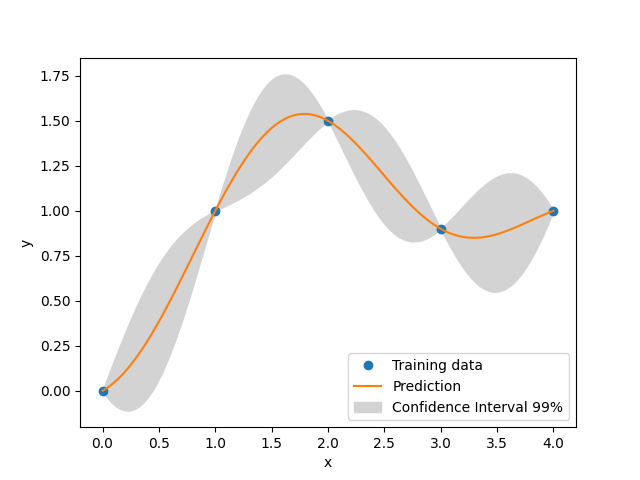

ot-smt documentation¶
{kind=link}
otSMT is a module of OpenTURNS implementing some methods to bind surrogate models from SMT into OpenTURNS PythonFunctions.
Available surrogate models from SMT:
Least Squares Model
Neural Network Model
Radial Basis Function
Inverse Distance Weighting
Regularized minimal-energy tensor-product splines
Second-order polynomial approximation
Kriging
Kriging Partial Least Squares (KPLS)
KPLSK
Gradient Enhanced KPLS
Mixtures of Experts
Available multifidelity surrogate models from SMT:
Multi-Fidelity Kriging
Multi-Fidelity KPLS
Multi-Fidelity KPLSK
Available mixed-variables surrogate models from SMT:
Mixed Integer Kriging with Continuous Relaxation
Mixed Integer Kriging with Gower Distance
Documentation about SMT can be found here
User documentation¶
Examples¶
- Examples
- Use of Least Squares Surrogate Model
- Use of Gradient Enhanced Neural Network Model
- Use of Radial Basis Function
- Use of Inverse Distance Weighting
- Use of Regularized minimal-energy tensor-product splines
- Use of Second-order polynomial approximation
- Use of Kriging
- Use of KPLS
- Use of KPLSK
- Use of GEKPLS
- Use of Mixture of Experts
- Use of Multi-Fidelity Kriging
- Use of Multi-Fidelity Kriging Partial Least Squares
- Use of Multi-Fidelity Kriging Partial Least Squares K
- Use of Mixed Variable Kriging
References¶
Bouhlel, M. A., Hwang, J. T., Bartoli, N., Lafage, R., Morlier, J., & Martins, J. R. (2019). A Python surrogate modeling framework with derivatives. Advances in Engineering Software, 135, 102662.